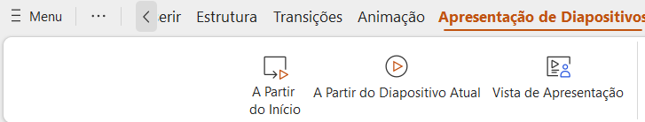

PowerPoint:
Creating a Presentation:
Opening PowerPoint:
Start Microsoft PowerPoint by clicking on the program icon in the taskbar or searching for it in the Start menu.
Creating a New Presentation:
When opening PowerPoint, you will see a template selection screen. Choose a template for your presentation or click on "Blank Presentation" to start from scratch.
Adding Slides:
Click on the "Insert" tab in the toolbar and select "New Slide" to add a new slide to your presentation.
Choose the desired layout for the new slide from the available layout gallery.
Criando uma apresentação:
Abrindo o PowerPoint:
Inicie o Microsoft PowerPoint clicando no ícone do programa na barra de tarefas ou pesquisando-o em Iniciar cardápio.
Criando uma nova apresentação:
Ao abrir o PowerPoint, você verá uma tela de seleção de modelos. Escolha um modelo para sua apresentação ou clique em "Apresentação em branco" para começar do zero.
Adicionar slides:
Clique na guia "Inserir" na barra de ferramentas e selecione "Novo slide" para adicionar um novo slide à sua apresentação.
Escolha o layout desejado para o novo slide na galeria de layouts disponível.
Adding Content to Slides:
Inserting Text:
Click on the text placeholders on the slides to enter your content.
You can also click on the "Text Box" option in the "Insert" tab to add custom text boxes where you want.
Inserting Images and Graphics:
To add images, charts, or other visual elements, click on "Insert" in the toolbar and choose the desired option, such as "Picture" to insert an image from your computer.
Adicionar conteúdo ao Apresentações:
Inserindo texto:
Clique nos espaços reservados para texto nos slides para inserir seu conteúdo.
Você também pode clicar na opção "Caixa de texto" na guia "Inserir" para adicionar caixas de texto personalizadas onde desejar.
Inserindo imagens e gráficos:
Para adicionar imagens, gráficos ou outros elementos visuais, clique em "Inserir" na barra de ferramentas e escolha o desejado opção, como "Imagem" para inserir uma imagem do seu computador.
Design and Formatting:
Applying Slide Design:
In the "Design" tab, you will find a variety of predefined themes and slide styles. Click on a theme to apply it to your presentation.
Customizing the Design:
Use the customization options in the "Design" tab to adjust colors, fonts, and other slide elements as needed.
Design e formatação:
Aplicar design de slide:
Na aba "Design", você encontrará uma variedade de temas e estilos de slides predefinidos. Clique em um tema para aplicar na sua apresentação.
Personalizando o Design:
Use as opções de personalização na guia "Design" para ajustar cores, fontes e outros elementos do slide conforme desejar. necessário.
/i.s3.glbimg.com/v1/AUTH_08fbf48bc0524877943fe86e43087e7a/internal_photos/bs/2020/M/E/pRHgCnSGWuplQ7MGxKIw/passo-4.jpg)
Animations and Transitions:
Adding Transitions:
In the "Transitions" tab, you will find a variety of transition effects to choose from. Select the slide to which you want to apply a transition and choose the desired effect.
Applying Animations:
To add animations to individual elements in your slides, select the element and go to the "Animations" tab. Choose the desired animation type from the available gallery.
Animações e Transições:
Adicionando transições:
Na aba "Transições", você encontrará uma variedade de efeitos de transição para escolher. Selecione o slide a ser qual você deseja aplicar uma transição e escolha o efeito desejado.
Aplicar animações:
Para adicionar animações a elementos individuais nos slides, selecione o elemento e vá para a guia "Animações". Escolha o tipo de animação desejado na galeria disponível.


Review and Collaboration:
Reviewing and Commenting:
Use the "Review" tab to add comments, review spelling and grammar, and track changes in your presentation.
Revisão e Colaboração:
Revisar e comentar:
Use a guia "Revisar" para adicionar comentários, revisar ortografia e gramática e monitorar alterações em sua apresentação.

Presenting Your Presentation:
Starting Slide Show:
To start the presentation, click on "Slide Show" at the top of the PowerPoint window and choose between "From Beginning" to start from the first slide or "From Current Slide" to start from the current slide.
Navigating Through Slides:
During the presentation, use the arrow keys on the keyboard to navigate through the slides. Press Esc to exit the presentation.
Apresentando sua apresentação:
Iniciando apresentação de slides:
Para iniciar a apresentação, clique em "Slide Show" na parte superior da janela do PowerPoint e escolha entre "De Começando" para começar no primeiro slide ou "Do slide atual" para começar no slide atual.
Navegando pelos slides:
Durante a apresentação, use as teclas de seta do teclado para navegar pelos slides. Pressione Esc para sair a apresentação.
